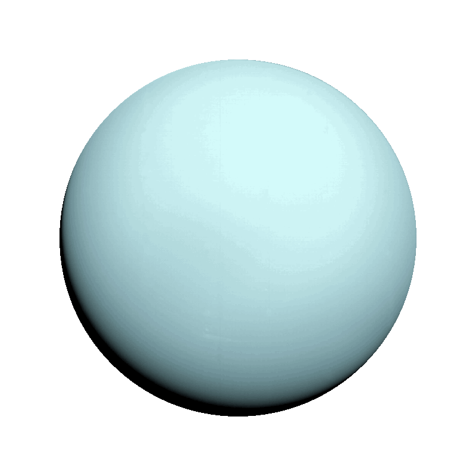
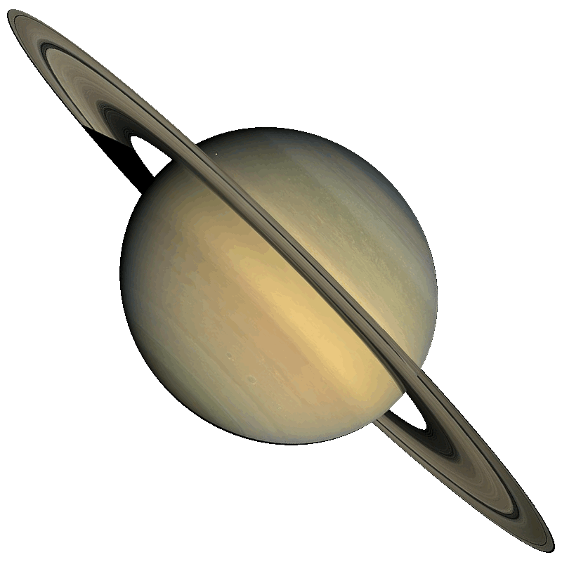
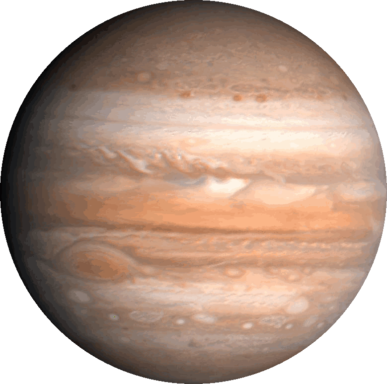
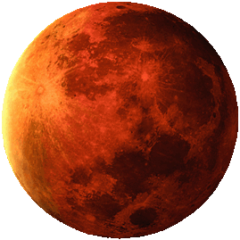
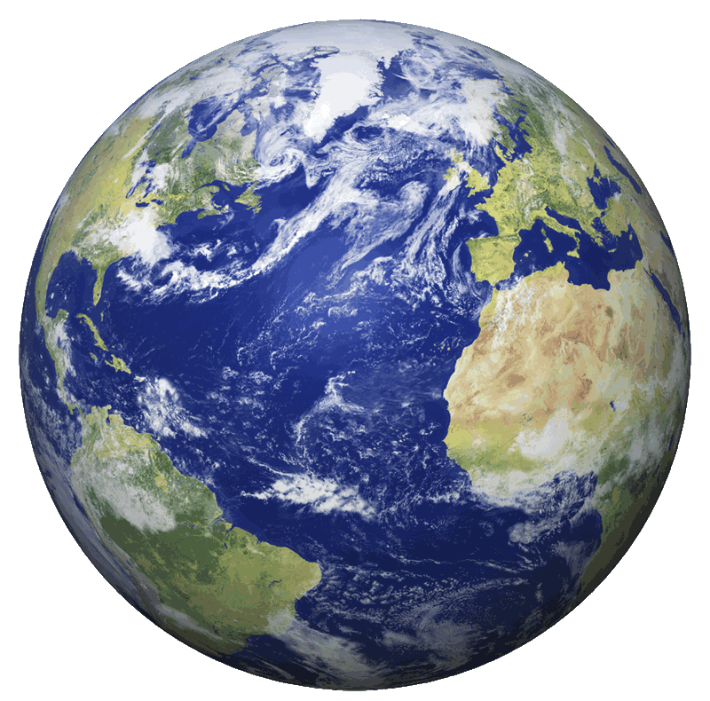
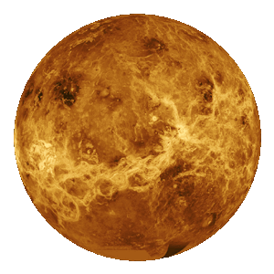
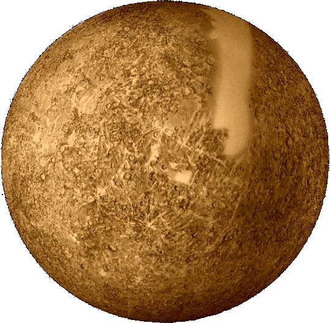
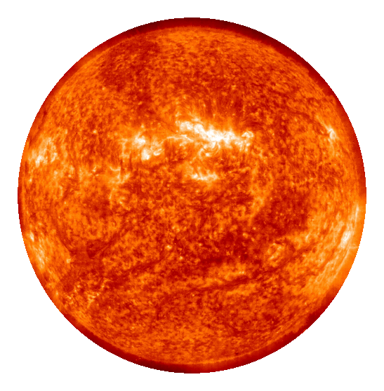

Neptune is the last planet in our Solar System (Excluding Pluto). It is made up of gas, and is generally very cold.
Distance from Sun: 2,798,000,000 miles (4,503,000,000 km)
Primary Color: Blueish-purple
Size Rank: 4
Gravity:11.15 m/s²
Sidereal rotation Period: 0.6713 day
Equatorial rotation velocity:2.68 km/s
Revolution Period: 165 years
Mass (kg):1.02 x 1026
Mean surface temperature(K): 48
Planet Orbit: 165 years
Neptune

Uranus pales in comparision to its neighbors, Saturn and Jupiter, but it is still quite big compared to the Eartht. A unique characteristic of Uranus is that it rotates around the Sun in the opposite direction of all the other planets.
Primary Color: Greenish-blue
Size Rank: 3
Gravity:8.69 m/s²
Sidereal rotation Period: 0.71833 d
Equatorial rotation velocity: 2.59 km/s
Revolution Period: 84.3 years
Mass (kg):8.68 x 1025
Mean surface temperature(K): 59
Planet Orbit: 84.3 years
Uranus

Saturn is the second largest planet in our Solar System, and is popularly known by its rings. Saturn also has many prominent Moons, with Titan being the most significant due to the fact that it has its own atmosphere.
Primary Color: Yellow
Size Rank: 2
Gravity: 10.44 m/s²
Sidereal rotation Period: 10.2 hours
Equatorial rotation velocity: 9.87 km/s
Revolution Period: 29.466 years
Mass (kg):5.69 x 1026
Mean surface temperature(K): 88
Planet Orbit: 29.466 years
Saturn

Jupiter is the giant of our Solar System, and is so huge that it has altered the paths of countless other celestial bodies in our Solar System. It is approximately 1120% of the Earth's size.
Primary Color: Brown
Size Rank: 1
Gravity:24.79 m/s²
Sidereal rotation Period:9.8 hours
Equatorial rotation velocity: 12.6 km/s
Revolution Period: 11.86 years
Mass (kg): 1.90 x 1027
Mean surface temperature(K): 120
Planet Orbit: 11.86 years
Jupiter

Mars is pretty popular in recent times due to being our closest neighbor, and looking like a realistic possiblity for future settlement in case life is found there. We are currently sending many teams to research the possibility of liquid water on Mars.
Distance to Earth: 140,000,000 miles (225,300,000 km)
Primary Color: Red
Size Rank: 7
Gravity: 3.711 m/s²
Sidereal rotation period: 1.025957 d (retrograde)
Equatorial rotation velocity: 868.22 km/h (241.17 m/s)
Revolution period (length of year in Earth days): 686.98
Mass (kg): 6.42 x 1023
Maximum surface temperature(K): 310
Minimum surface temperature(K): 150
Planet Orbit: 686.98
Mars

Earth is the most important planet in this list, for obvious reasons. The place we call Home is truly a beautiful planet, and the only one known to have life.
Primary Color: Blue
Size Rank: 5
Gravity: 9.80665 m / s2
Sidereal rotation Period: 23.93 hours
Equatorial rotation velocity: 1,674.4 km/h
Revolution Period: 365.26
Mass (kg):5.98 x 10^24
Mean surface temperature(K): 281
Mean maximum surface temperature(K): 310
Mean minimum surface temperature(K): 260
Planet Orbit: 365.26
Earth

Venus can be thought of as Earth's twin in regards to its size, but it is more like Earth's evil twin in regards to its atmosphere. Known for extremely hot temperatures and acid rains, it is not a place that seems as welcoming as Earth.
Primary Color: Yellow
Size Rank: 6
Gravity: 8.87 m/s²
Sidereal rotation period: -243.0185 d (retrograde)
Equatorial rotation velocity: 6.52 km/h (1.81 m/s)
Revolution period (length of year in Earth days): 224.7
Mass(kg): 4.87 x 1024
Mean surface temperature(K): 726
Planet Orbit: 225 days
Venus

Mercury is the closest planet to the Sun, and also the smallest planet in our Solar System now that Pluto doesn't make the list. It's nearly half of the Earth's size, and like Earth, has ice-capped poles.
Primary Color: Orange
Size Rank: 8
Gravity: 3.7 m/s²
Sidereal rotation Period: 58.65 hours
Equatorial rotation velocity: 10.892 km/h
Revolution Period: 87.97
Mass (kg): 3.3 x 10^23
Mean surface temperature(K): 452
Maximum surface temperature(K): 700
Minimum surface temperature(K): 100
Planet Orbit:
Mercury

The Sun is the lone Star in our Solar System. All the planets in the Solar System rotate around The Sun. It has a huge amount of nuclear energy and constantly has nuclear fission on its surface.